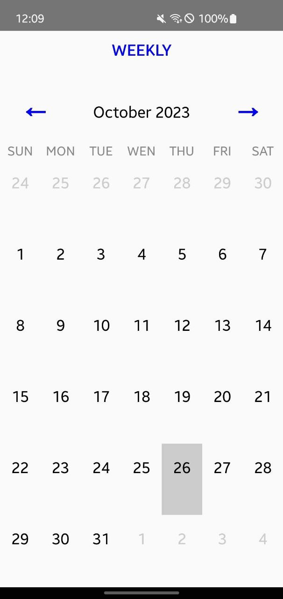
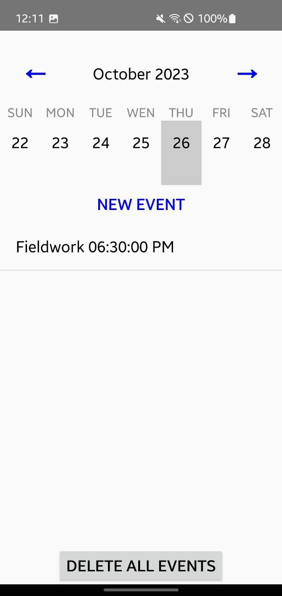
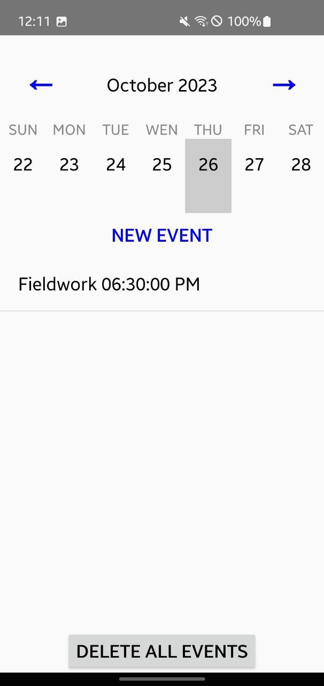
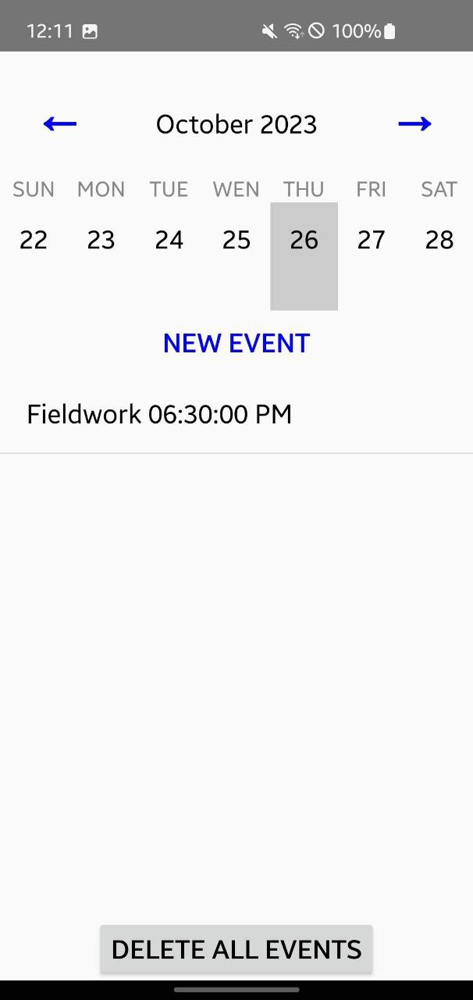

My Time
Android App | Samsung IT School Graduation Project (2022)
Project Description
Welcome to My Time, your personal time management assistant. This Android application, developed as a graduation project at the Samsung IT School (2022), is designed to help you take control of your time, especially if you're a freelancer or self-employed professional.
The project focused on creating a user-friendly tool for organizing workflow and increasing productivity.
Implemented Features
- Task Management: Easily create, organize, and manage your tasks and to-do lists. Stay on top of your workload and never miss a deadline.
- Time Tracking: Track how you spend your time on different tasks and projects to analyze productivity.
- Event/Entry Management: Judging by the screenshot, the ability to add events specifying name, price (?), gear (?), date/time, and notification settings was implemented.
Technologies
The application was developed using the following technologies:
- Platform & Language:
- Android SDK
- Java
- UI & Components:
- AndroidX Libraries (AppCompat, ConstraintLayout, CardView, RecyclerView)
- Material Components for Android
- Build & Testing:
- Gradle
- JUnit
Links
- Repository on GitHub
- Google Play Store: (Not published. Major rework planned before release)
Screenshots

 

